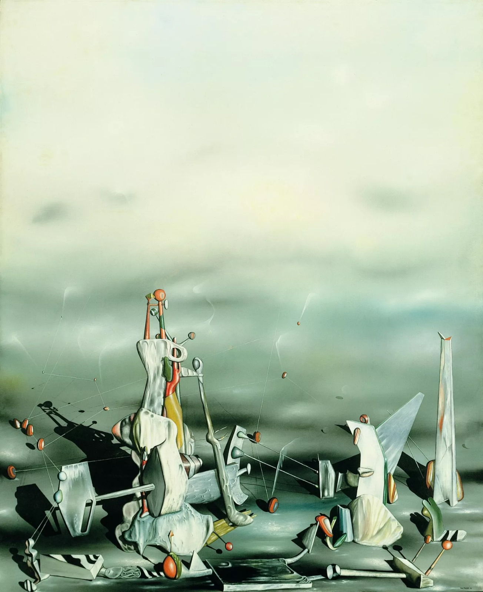
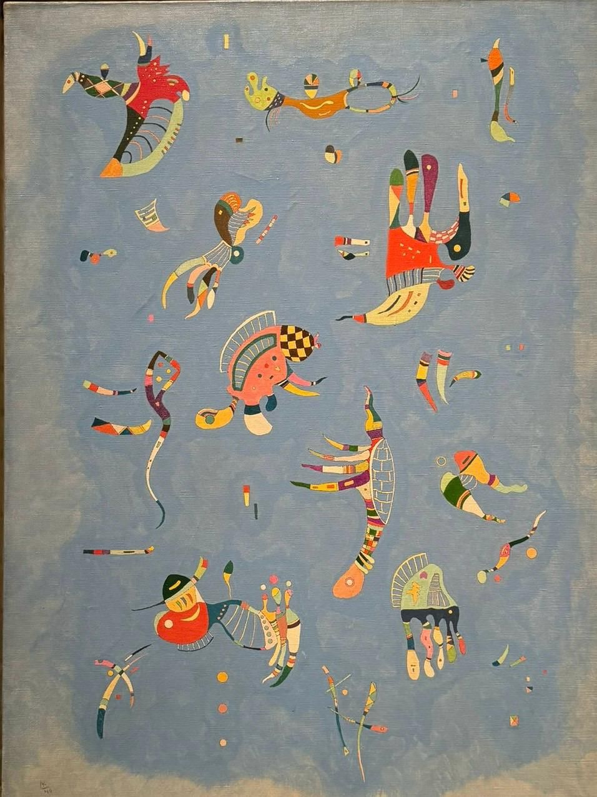
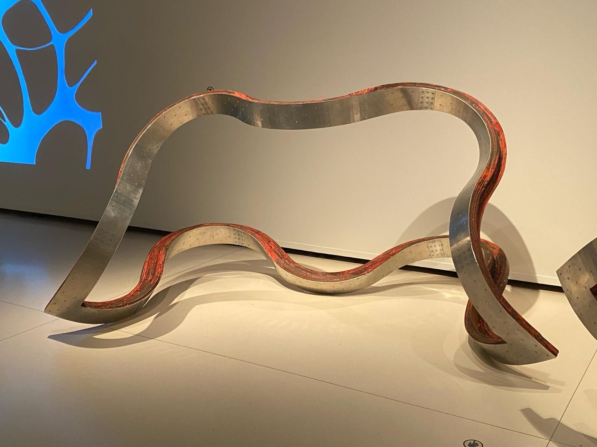
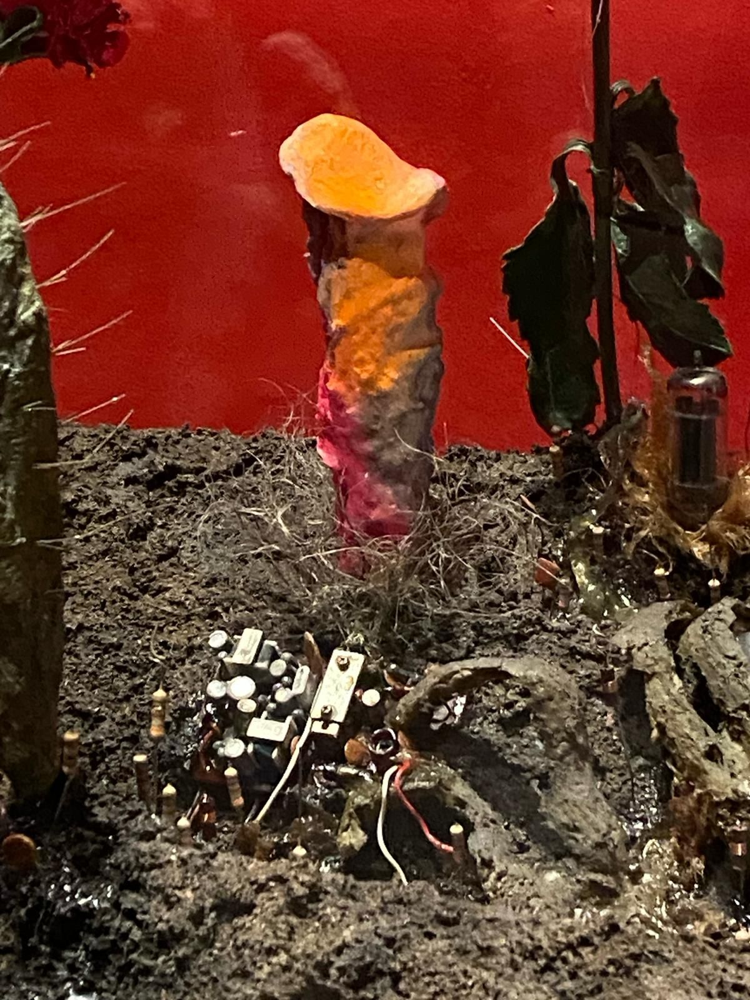

Este evento estuvo disponible durante una larga temporada, del 19 de febrero al 9 de junio. El comisariado estuvo a cargo de Angela Lampe, doctora en Historia del Arte por la Universidad La Sorbona de París. La muestra representa una reflexión entre el arte y la naturaleza, entre cultura y ciencia, principalmente a través del surrealismo.
La mayoría de las obras son préstamos del Centre Pompidou, tanto el parisino como el malagueño. Esta masiva exposición cuenta con obras de artistas tan imponentes como Georgia O'Keeffe, Visili Kandinski, Jean Dubuffet, Max Ernst, entre otros grandes maestros. Aunque la mayoría de la exposición está liderada por la pintura, encontramos diferentes soportes que hacen la exposición dinámica, divertida y profunda.
En la exposición, se muestran diferentes tipos de obras para representar cuatro conceptos relacionados con la naturaleza y su desarrollo. La muestra está marcada por el movimiento, la imaginación, la vida y el uso de los colores.
Al iniciar, nos encontramos en metamorfosis: se difumina la línea entre las formas antropomorfas, zoomorfas o vegetales para abrirse a nuevas posibilidades más creativas. Aquí encontramos obras como Femme au chapeau de Pablo Picasso (1935), en donde vemos a una mujer con un rostro distorsionado, símbolo de cambio y transformación, característico de la metamorfosis de la naturaleza.

Además, encontramos obras como Le Palais aux rochers de fenêtres de Yves Tanguy (1942), en donde vemos una obra dividida en dos: en la parte superior, un cielo orgánico, natural, tranquilo; mientras que en la parte inferior la relación entre lo mecánico y lo geológico, lo natural y lo inerte. La metamorfosis está presente en el paisaje, como este ha sido transformado por la modernidad y como las montañas pasan a ser una mezcla entre lo salvaje y lo humanamente creado.
Posteriormente, pasamos al apartado de mimetismo, donde la naturaleza, en sus diversas formas, se convierte en una fuente de inspiración para los artistas, quienes reproducen sus formas, texturas y movimientos.

Encontramos obras como Cielo azul del padre del arte abstracto, Kandinski. En esta obra, vemos extrañas formas biomórficas que flotan sobre un fondo azul celeste; no se puede identificar exactamente qué son, pero, sin duda alguna, podemos ver la intención del autor: expresar emociones y crear una experiencia sensorial a través de su pintura. Las formas en Cielo azul son una mezcla de biomorfos, formas abstractas que parecen tener alguna referencia orgánica. El objetivo de Kandinski es crear una sensación de movimiento y ligereza, como si estas formas flotaran en el aire.
Tras haber visto dos secciones más homogéneas, pasamos a dos que son los polos: creación y amenaza. En creación, observamos la imaginación del pintor moderno en su clímax; los artistas se convierten en dioses, juegan con su experiencia y con la naturaleza, crean nuevas formas exquisitas para la vista.

Así, encontramos por ejemplo Breed de Richard Deacon (1989), un enrevesado engendramiento hecho a base de madera y masonita estratificados, aluminio, resina epoxi y pigmentos. La obra tiene una apariencia rígida, metálica, pero móvil, libre, fluida. Es una representación de la nueva creación, del nuevo uso de la naturaleza a merced del hombre, del sometimiento de la naturaleza al imaginativo humano, el cual es infinito.
Finalizando, encontramos amenaza: la sección más fiel a la realidad y la más profunda. Se trata de representar la desgracia traída por el ser humano y su eco en la naturaleza. Esta sección juega más con otros elementos externos al arte plástico; vemos una sala donde continuamente se reproduce un vídeo de aves volando en bandada, desesperadas. Transmite una energía sombría.

En esta sección, encontramos también Pollution-Cultivation-Nouvelle Écologie de Tetsumi Kudo (1971), en donde observamos diferentes tipos de plantas que contienen circuitos electrónicos en su raíz. Es la representación de la humanidad en decadencia, de la naturaleza contaminada. Según palabras del autor, el "antagonismo primitivo" del ser humano contra la naturaleza.
Casi al finalizar la exposición, nos chocamos con Skin Pool (Gleen) de Pamela Rosenkranz (1979), una gran piscina que contenía un líquido de un color beige, rosa, cremoso. Rosenkranz usa el arte como una crítica social y humana: su obra refleja cómo el ser humano crea modelos que únicamente corrompen tanto el valor más humano del hombre, como el poder bello y transformador de la naturaleza.
Las cuatro representaciones de la naturaleza son también un recorrido histórico de la relación entre el artista y lo natural.
Esta exposición es auténtica, es libre y es potente. El trabajo de la comisaria estuvo realizado estupendamente; la capacidad de la muestra para sumergir al espectador entre esa conexión de lo orgánico y lo mecánico es sutil, pero tiene un trabajo de aplausos detrás de escena. Al salir del recinto la mente está reflexiva, inquieta y maravillada: el pensamiento empieza a conectar la cotidianidad con lo inorgánico; y la libertad, en su máximo punto, como la concebiría un cuadro de Picasso, orgánica en sí misma.
- Lugar: CaixaForum Madrid
- Dirección: P.º del Prado, 36, Centro, 28014 Madrid
- Fechas: 19 de febrero – 9 de junio de 2024
- Transporte: Metro Estación del Arte · Metro y Cercanías Atocha
- Precio: 6 € · Gratis para clientes CaixaBank
- Horarios: Todos los días, de 10 a 20 hrs.